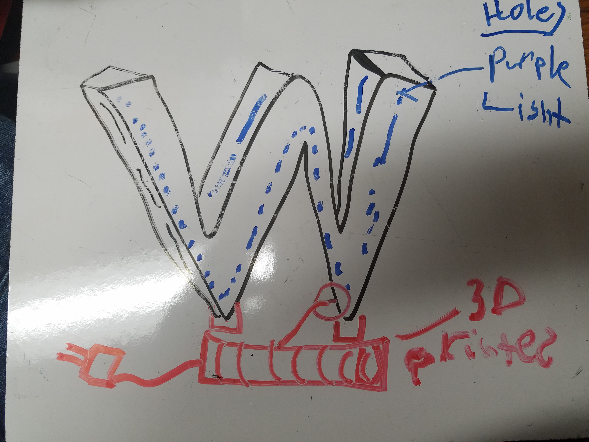
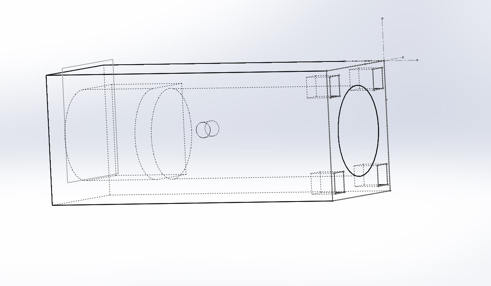

Lukas' Assignment 3: 3D Printed & Laser Cut Lamp!
Overview:


Synthesis / Define
Design prompt criteria:Ideation / Develop
The first thing i did was seek out inspiration online and brainstormed ideas.

In the sketch below, I explored how University of Washington's Logo could be integrated into a lamp.

After considering the time it would take to manufacture the prototype, I pivoted away from this design in addition to considering the after considering the value proposition created by the function for the end user.


Test / Implementation / Deliver
Utilizing Solidworks and Illustrator I prioritized Rapid prototyping speed over diving deeper into Learning Rhino
Thankfully I utilized my time more efficiently than last few projects.
The laser cut pieces were measured for the most part correctly, requiring only a handful tweaks to create a press fit.


Problem:
The largest issue with this project was getting a 3D printer to work correctly. I used two different printers before finally finding a third working printer that would lay down fillament correctly.

Solution:
My solution to this issue was to try every troubleshooting in the book. From changing printers to tweaking the model, to buying new filament. Sometime the hardwareFor example, when I look at a 2D image to consider it's 3 dimensions, I slice it in half and consider how I would get this outcome if I was subtracting the material.
With Visual Diagrams in Grasshopper, one has to break down the model into small dimensions which make up the components from the ground up.


Reflection
In hindsight, I should have split the 3D printed model in half to reduce time to print.
That way I could have started printing two 6 hour prints instead of one 12 hour print.
Attribution:
Joshua and the Tuesday night Crew (Dhwani Vekaria, Julie Do, Demarcus, and Julie Rose) helped each other out with best practices.
Wooden chandelierMachine Settings:

Source files
Click the image below to download the Solidworks and Illustrator files
 Dragon
Dragon